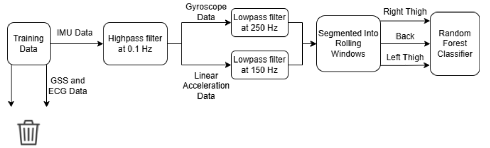

A sensor-agnostic ML pipeline for real-time fall detection in long-term care
Falls are a critical safety concern for older adults, particularly those in long-term care facilities where the risk of serious injury is much higher than in the general population. My objective for this project was to develop a reliable, sensor-independent machine learning model capable of detecting both falls and near-falls using Inertial Measurement Unit (IMU) data.
By designing a system that can be integrated into everyday items like smartwatches, jewelry, or life-alert necklaces, I aimed to provide a non-intrusive safety net that ensures caregivers are immediately alerted when a fall occurs, which would improve clinical response times and patient outcomes.
Maximizing sensitivity across multiple sensor types
The main challenge with fall detection is that falls are rare events, and the data from everyday activities can look similar to a fall — especially near-falls, where a person loses balance but recovers without hitting the ground. The model needs to be sensitive enough to catch every real fall while not triggering on normal movement.
A second challenge was making the model work across different sensor placements and hardware. In a real care setting, you cannot guarantee that every resident will wear a sensor in the same location, so the model needed to work reliably whether the IMU is on the thigh, the back, or somewhere else. This required building a pipeline that could handle multiple sensor modalities and still produce a consistent prediction.
